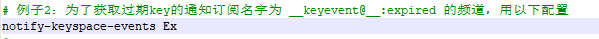
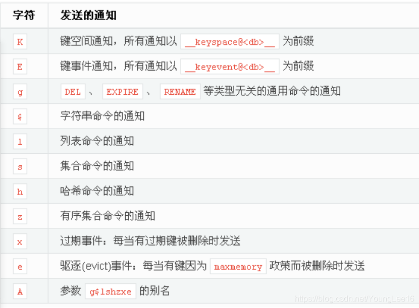

工作中遇到需要监听redis过期时间,整理了一下redis集群过期监听的设置过程。注意key的监听比较消耗资源，测试完毕后记得将监听设置去除掉。
修改redis配置文件
集群的redis需要在每个集群redis配置文件中开启redis过期监听。将redis配置文件中的(redis.conf) notify-keyspace-events设置未Ex即可。所有集群的配置文件都需要更改。

当然也可以不用重启redis动态更新redis的配置。因为我这边只是做测试使用，所以直接使用这种方式了，不用重启redis集群立即生效，每个redis集群节点都需要设置一下。
1 | config set notify-keyspace-events Ex |
关于notify-keyspace-events 配置含义可以参考下图

集成springboot
配置依赖
1 | <dependencyManagement> |
配置文件
1 | server: |
redis监听配置类
1 |
|
1 | public class RedisMessageListenerFactory implements BeanFactoryAware, ApplicationListener<ContextRefreshedEvent> { |
redis工具类
1 |
|
监听过期
1 |
|
运行主类
1 |
|